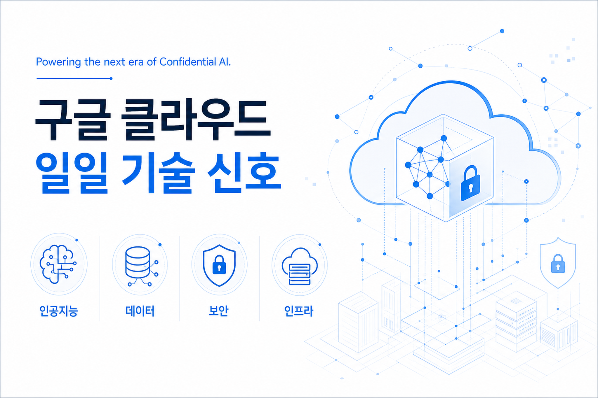

기밀 인공지능의 다음 시대를 여는 기반
구글 클라우드는 애플의 확장된 프라이빗 클라우드 컴퓨트 시스템을 지원하기 위해 애플과 협력한다고 밝혔습니다. 핵심은 기밀 컴퓨팅, 티타늄 보안 아키텍처, 타이탄 칩, 인텔 신뢰 도메인 확장, 엔비디아 기밀 컴퓨팅을 결합해 민감한 인공지능 추론을 보호한다는 점입니다.
원문 보기이번 실행에서는 구글 클라우드 보안·아이덴티티 블로그의 신규 게시물 한 건을 확인했습니다. 본문은 공식 블로그와 저장된 지식형 문서만 근거로 작성했으며, 출처만으로 확정하기 어려운 항목은 확인 필요로 표시했습니다.

이번 신규 게시물은 민감한 인공지능 추론 워크로드에서 성능뿐 아니라 처리 중 데이터 보호, 하드웨어 신뢰 기반, 투명한 검증 가능성이 클라우드 인프라 평가 기준으로 부상하고 있음을 보여줍니다.
구글 클라우드는 애플의 확장된 프라이빗 클라우드 컴퓨트 시스템을 지원하기 위해 애플과 협력한다고 밝혔습니다. 핵심은 기밀 컴퓨팅, 티타늄 보안 아키텍처, 타이탄 칩, 인텔 신뢰 도메인 확장, 엔비디아 기밀 컴퓨팅을 결합해 민감한 인공지능 추론을 보호한다는 점입니다.
원문 보기구글 클라우드는 애플 협력 사례를 통해 기밀 인공지능 인프라의 핵심 요소를 하드웨어 신뢰 기반, 처리 중 데이터 보호, 독립 검증 가능한 투명성으로 설명했습니다.
근거는 2026년 6월 12일 발행된 구글 클라우드 공식 보안·아이덴티티 블로그와 해당 문서의 지식형 마크다운 저장본입니다.
동일한 보호 구조가 일반 고객 워크로드에서 어떤 상품, 지역, 가격, 증빙 문서로 제공되는지는 원문만으로 확정하기 어려워 확인 필요입니다.

민감 데이터가 포함된 인공지능 추론을 클라우드에서 수행하려는 기업은 그래픽처리장치 성능뿐 아니라 처리 중 데이터 보호, 권한 있는 운영자 접근 제한, 검증 가능한 투명성을 함께 요구사항으로 보아야 합니다.
| 게시물 | 출처 블로그 | 확인된 서비스·기술 | 신규성 판단 |
|---|---|---|---|
| 기밀 인공지능의 다음 시대를 여는 기반 | 구글 클라우드 보안·아이덴티티 블로그 | 기밀 컴퓨팅, 프라이빗 클라우드 컴퓨트, 티타늄 보안 아키텍처, 신뢰 실행 환경 | 이번 실행 신규 수집 |
민감 데이터 추론 후보 업무를 하나 선정해 데이터 처리 위치, 키 관리, 접근 권한, 감사 로그, 하드웨어 기반 격리 증빙을 먼저 대조합니다.
이 보호 구조가 개인정보, 고객 데이터, 임직원 업무 데이터, 규제 대상 데이터 중 어느 범위에 필요한지와 비용 증가를 정당화할 위험 감소 효과가 있는지 확인해야 합니다.

상세 이미지 프롬프트는 저장소와 산출물 폴더의 별도 프롬프트 기록 파일에 보존했습니다. 화면 본문에는 독자 경험과 한글화 품질을 위해 요약 정보만 표시합니다.